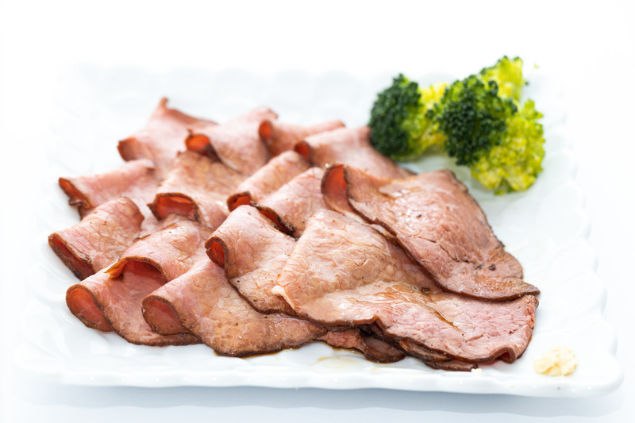

手作りローストビーフ

材料 3～4人分
- 牛肉ブロック
- 400g
- 塩胡椒
- 適量
- 醤油
- 50cc
- みりん
- 25cc
- 酒
- 25cc
- おろしにんにく
- 大さじ1
作り方
1
牛肉に塩こしょうを擦り込みます。 大きめの鍋に、たっぷりのお湯を沸かしておきます。
2
フライパンにサラダ油を入れて熱し、牛肉を入れて強火で全体的に焼き色をつけます。
3
牛肉に焼き色がついたら、ラップで包みます。ラップは二重にして包んでください。
4
ジップロックなどのポリ袋に空気を抜いて入れ、口をしっかり閉じて輪ゴムでしっかり止めます。
5
鍋のお湯が沸騰したら、ポリ袋に入れた牛肉を入れて、そのまま3分ほどグツグツと煮ます。
6
3分経ったら火を止めて、鍋の蓋をして15～20分放置します。
7
お湯から牛肉の入ったポリ袋を取り出し、袋から出さない状態で冷めるまで置いておきます。
8
2で使用したフライパンにソースの材料を全て入れて軽く混ぜて沸騰させます。
9
ポリ袋から取り出して、ラップを外して薄くカットし器に盛ります。
8のソースをかければ完成です。